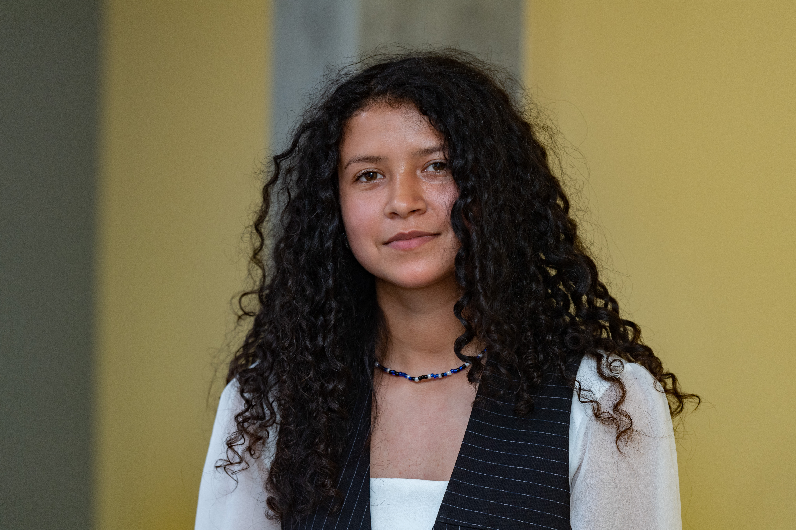

About

Hello, My name is Mayra. I recently graduated with my bachelors in Mathematics from Heritage University. A little about myself is that I was born and raised in Central Washington. Since graduating I have decided to take a gap year to learn more about what I would like to do. I would like to change career paths from my background in mathematics to something within physics/engineering. During this time I will be looking into different programs within engineering and physics to decide if doing a masters or phd is what I would like to do. As well as looking for positions in related fields to get more hands on experience to further pursue and understand what a job in that position is like.
A bit of my background I graduated with a bachelors in mathematics, but have done physics and computation research. The specific fields being computational physics at Laser Interferometer Gravitational-Wave Observatory, physical chemistry at Heritage University, quantum computation at University of Washington, and quantum chemistry computation at Pacific Northwest National Laboratory.
Additionally, I am really passionate about teaching my community about opportunities in STEM available to them. Thus, have sought mentorship experience as I have with the Educational Service District 105. That focuses on teaching students about college and opportunities available to them. Helping shed more like to the careers in STEM that within central Washington are not really seen or mentioned as much.


 (1).jpg)